www.igloo.inc — frame capture via REA (Chromium 156, GPU nyata)
13 frame dari skenario scroll (PageDown × 5) + 1 frame setelah klik = masuk mode explore.
Diambil melalui capture_browser_scenario; file di-decode dari Evidence bundle resmi REA.
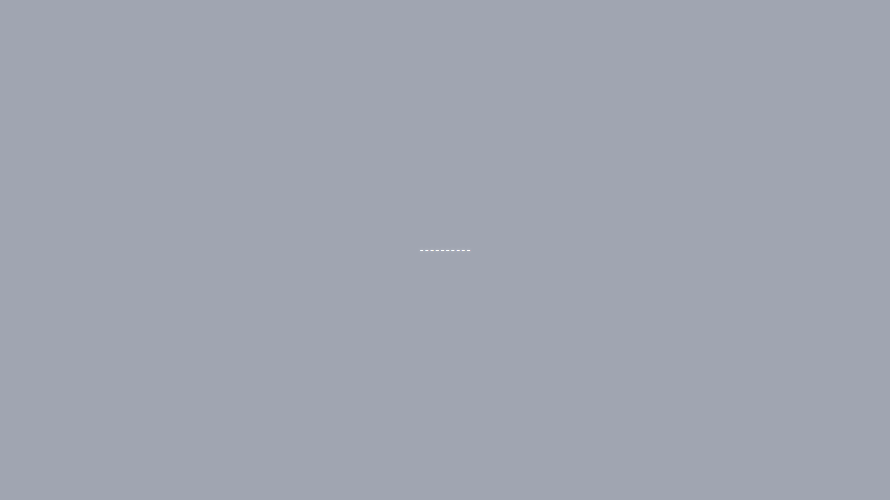
00 — sebelum navigasi. Warna solid: ini curtain preloader (1 warna, 6,9 KB).01 — load selesai, WebGL belum jalan. Masih curtain. Bukti tidak ada flash canvas kosong.
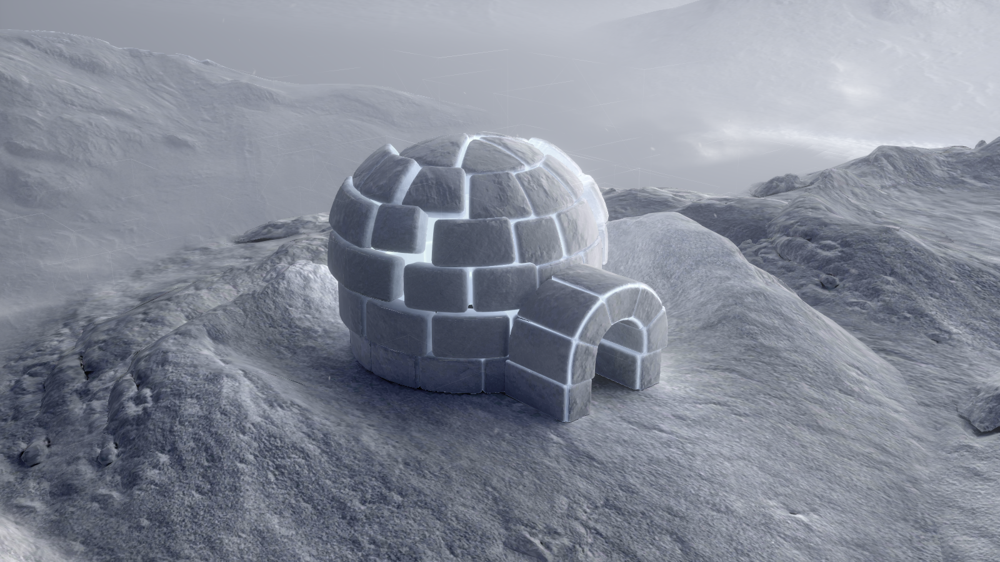
02 — scene pertama tampil (670 warna, 1,66 MB). Semua ~98 aset sudah masuk di titik ini.
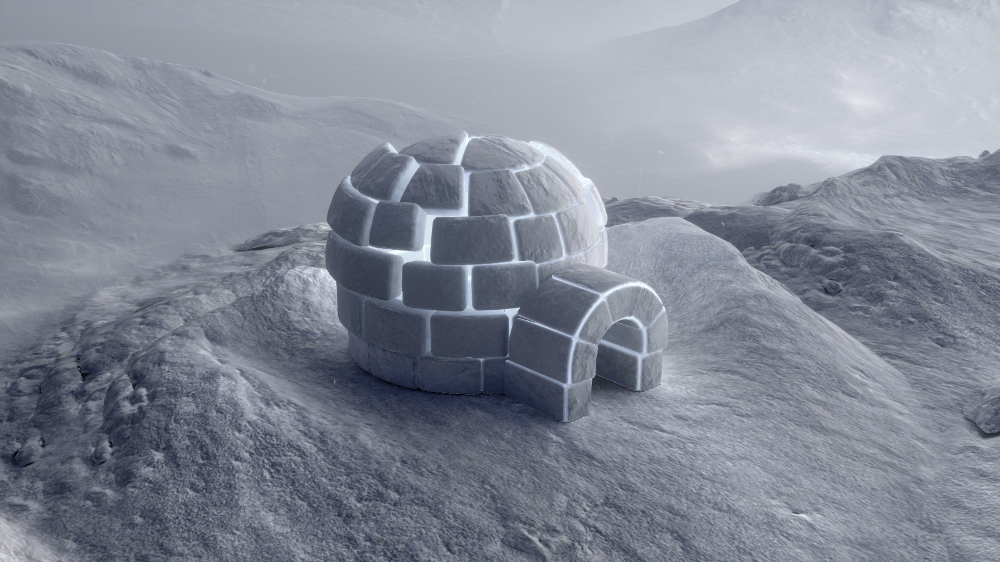
03 — PageDown pertama.
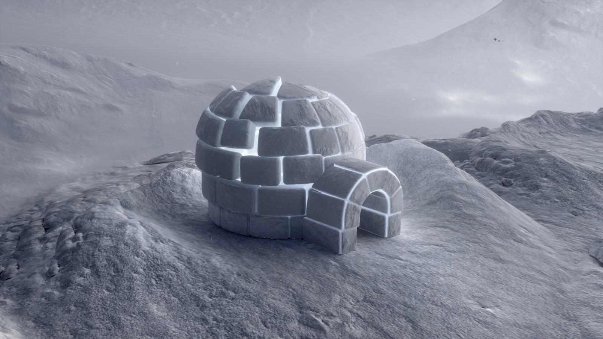
04 — setelah transisi.
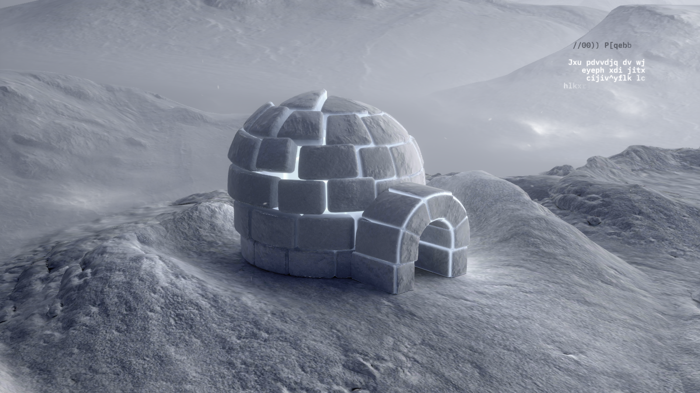
05 — PageDown kedua.
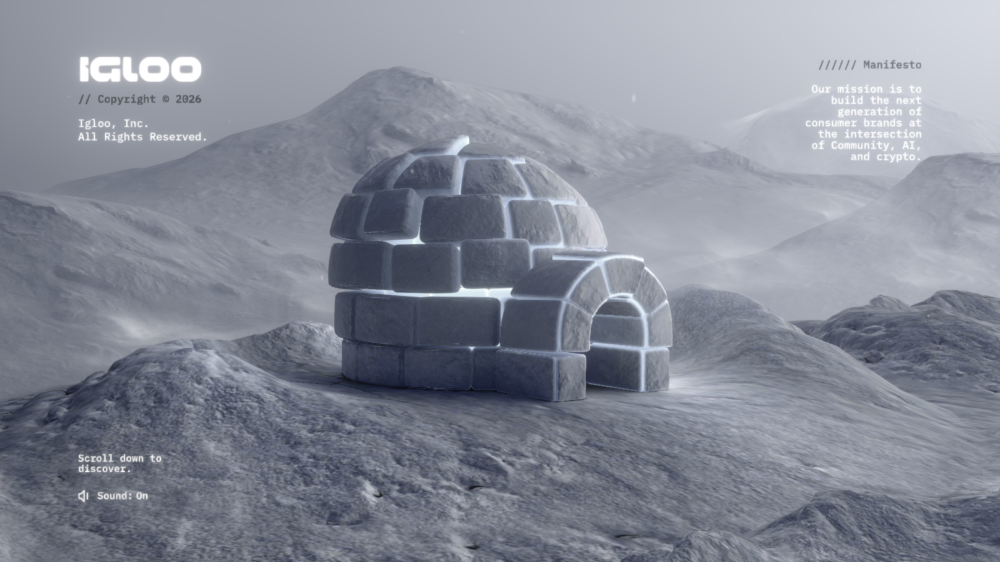
06 — transisi selesai. Ukuran turun (1,41 MB) = adegan jadi lebih sederhana/datar.
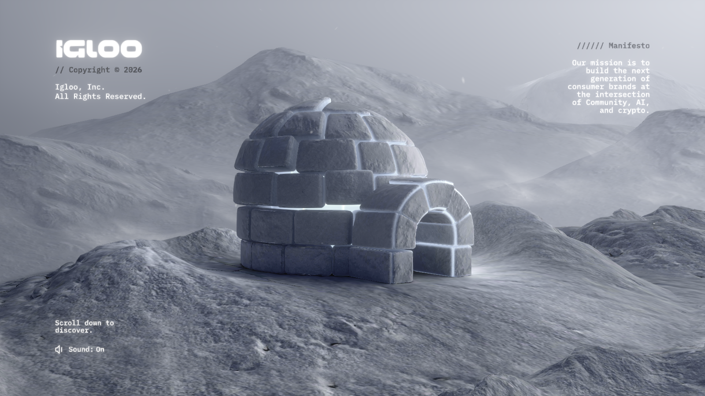
07 — PageDown ketiga.
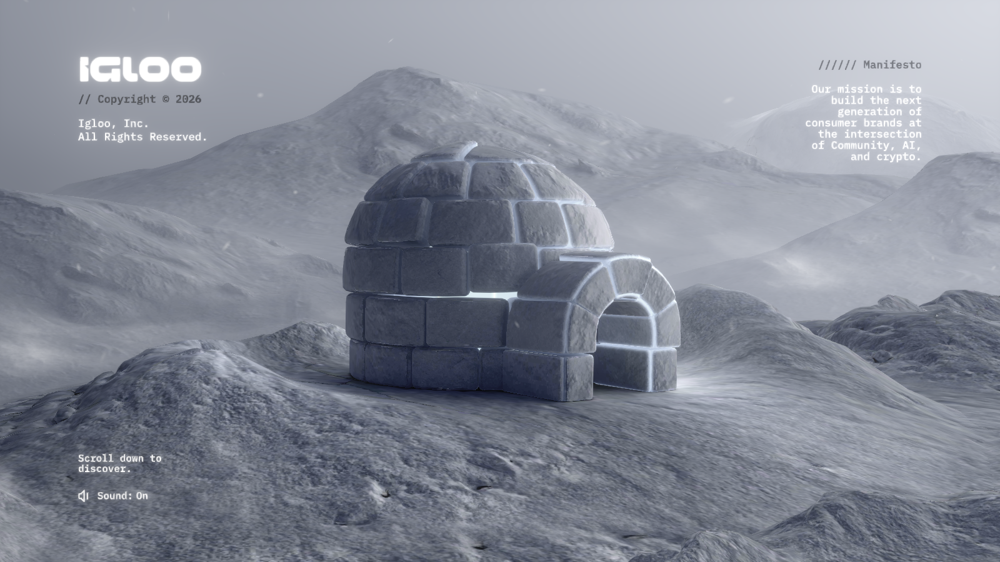
08 — transisi selesai.
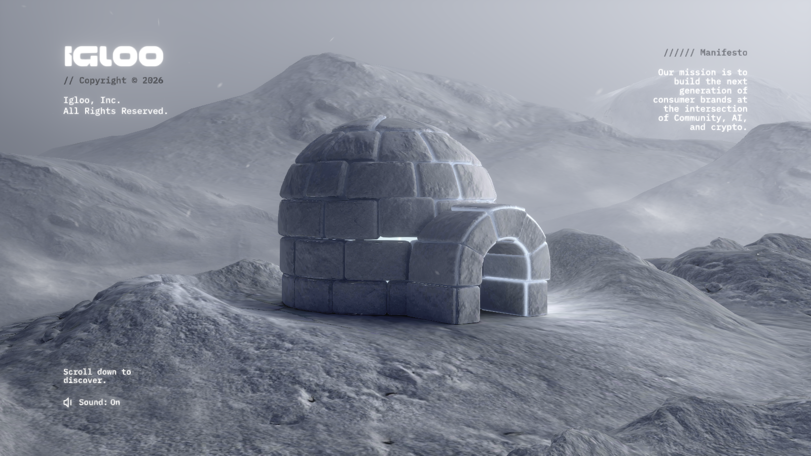
09 — PageDown keempat.
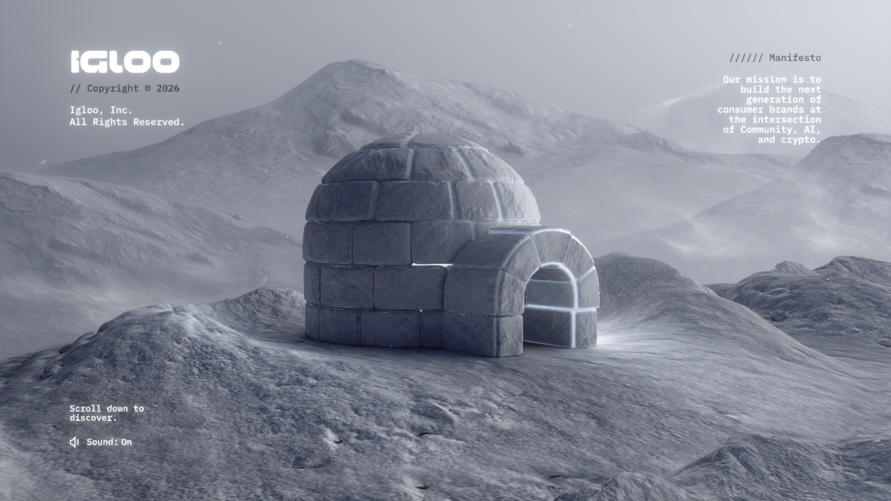
10 — transisi selesai.
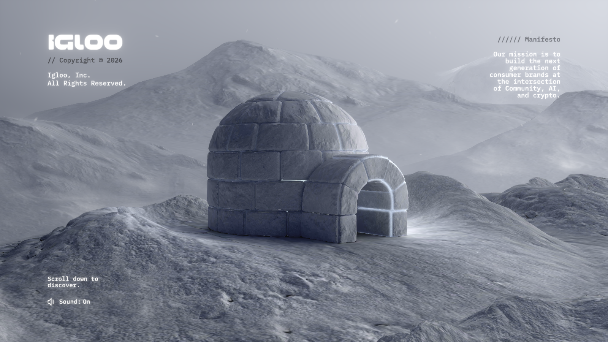
11 — PageDown kelima.
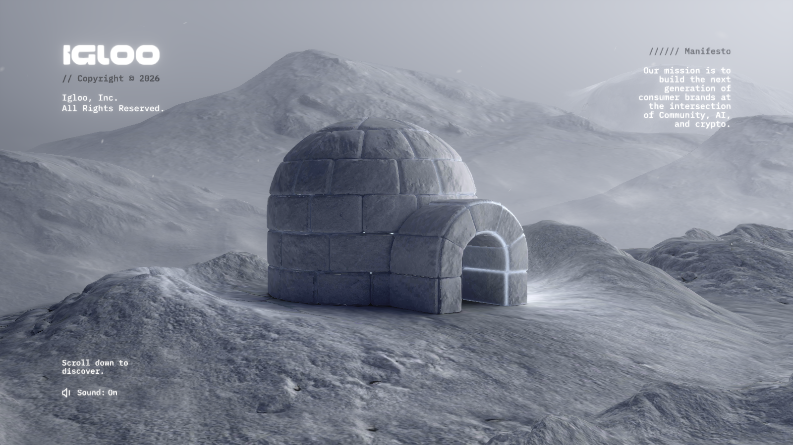
12 — state terakhir sebelum interaksi. Baseline untuk perbandingan.
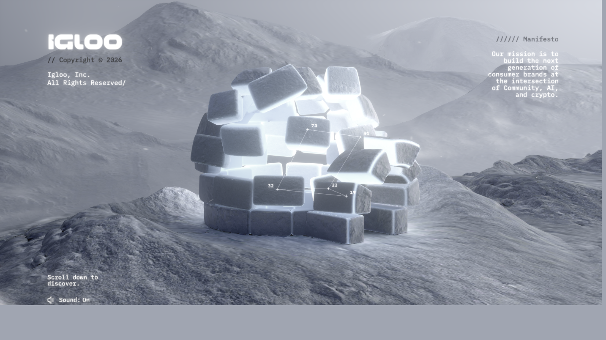
EXPLORE — setelah klik di body.
Luminance 137,5 → 149,5; kompleksitas warna 665 → 941; 60,8% piksel berubah.
Objek baru muncul dan tidak ada request jaringan baru → semua sudah di-preload.